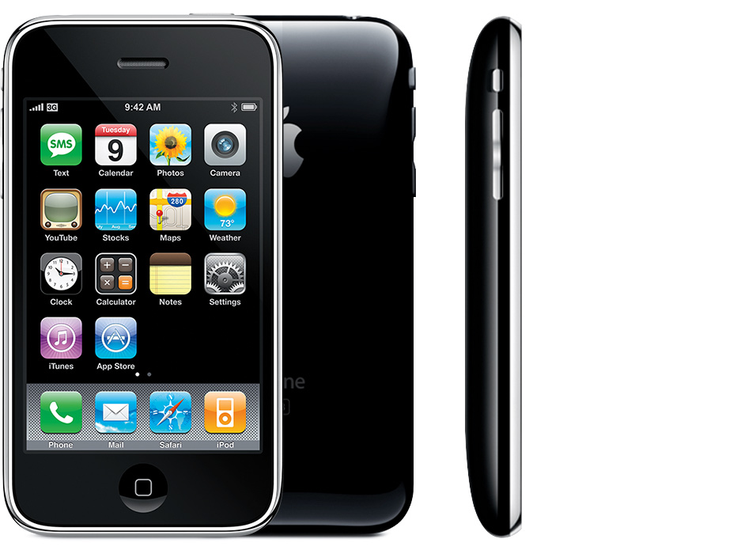

Evolucion Iphones
En 2007, Steve Jobs hizo historia al presentar el primer iPhone. La pantalla de 3,5 pulgadas fue pionera en su clase al contar con un monitor táctil que combinaba a un iPod con un navegador web con un teléfono. La cámara de 2 MP se encontraba en la parte posterior del dispositivo (aún no se habían impuesto las selfies) y solo estaba disponible para AT & T, según recordó el diario New York Daily News.
Tipos de Iphones
Iphone
- Año de presentación: 2007
- Capacidad: 4 GB, 8 GB, 16 GB
- El número de modelo que aparece en la cubierta posterior es A1203.
Detalles: La parte posterior de la cubierta es de aluminio anodizado. Tiene una bandeja SIM en la parte superior que aloja una tarjeta mini-SIM de “segundo formato” (2FF). El número de serie está grabado en la parte posterior de la cubierta.

Iphone 3G
- Año de presentación: 2008, 2009 (China continental)
- Capacidad: 8 GB, 16 GB
- Número de modelo en la cubierta
- posterior: A1324, A1241
Detalles: La parte posterior es de plástico. La impresión de la parte posterior del teléfono es menos brillante que el logotipo de Apple que se incluye arriba de esta. Tiene una bandeja SIM en la parte superior que aloja una tarjeta mini-SIM de “segundo formato” (2FF). El número de serie está impreso en la bandeja SIM.
Iphone 3GS
- Año de presentación: 2009
- Capacidad: 8 GB, 16 GB, 32 GB
- Colores: blanco y negro
- Número de modelo en la cubierta
- posterior: A1325, A1303
Detalles: La parte posterior es de plástico. La impresión de la parte posterior de la cubierta es del mismo color plateado y brillante que el logotipo de Apple. Tiene una bandeja SIM en la parte superior que aloja una tarjeta mini-SIM de “segundo formato” (2FF). El número de serie está impreso en la bandeja SIM.
Iphone 4
- Año de presentación: 2010 (GSM) y 2011 (CDMA)
- Capacidad: 8 GB, 16 GB, 32 GB
- Colores: blanco y negro
- Número de modelo en la cubierta
- posterior: A1349, A1332
Detalles: Tanto la parte frontal como la posterior son planas y de cristal, y una banda de acero inoxidable cubre los bordes. Los botones para subir y bajar el volumen tienen los signos “+” y “-”, respectivamente. Tiene una bandeja SIM en el lateral derecho que aloja una tarjeta micro-SIM de “tercer formato” (3FF). El modelo CDMA no tiene bandeja SIM.

Iphone 5
- Año de presentación: 2012
- Capacidad: 16 GB, 32 GB, 64 GB
- Colores: blanco y negro
- Número de modelo en la cubierta
- posterior: A1428, A1429, A1442
Detalles: La parte frontal es plana y de cristal. La parte posterior es de aluminio anodizado. Tiene una bandeja SIM en el lateral derecho que aloja una tarjeta de "cuarto formato" (4FF) nano-SIM. El IMEI está grabado en la cubierta posterior.